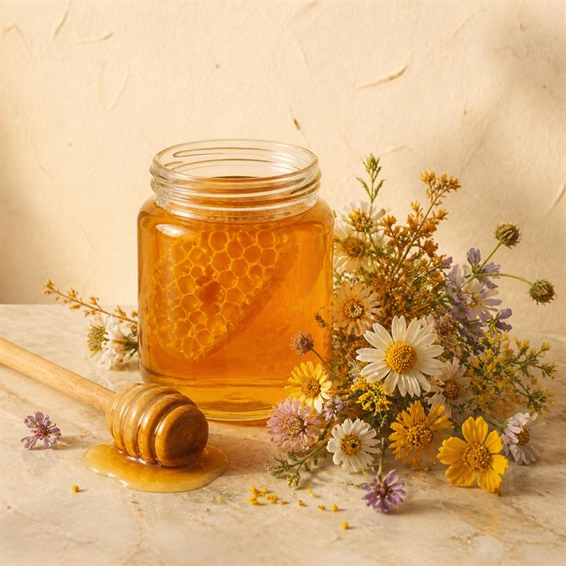
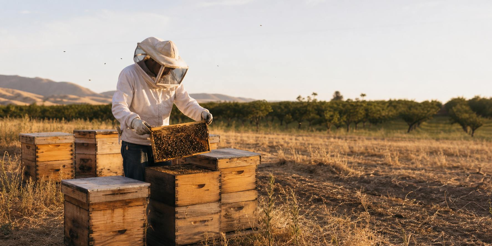
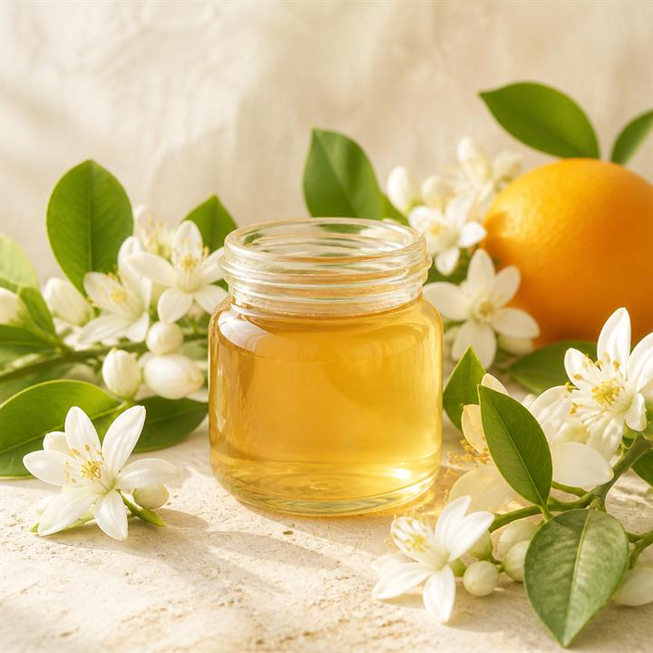
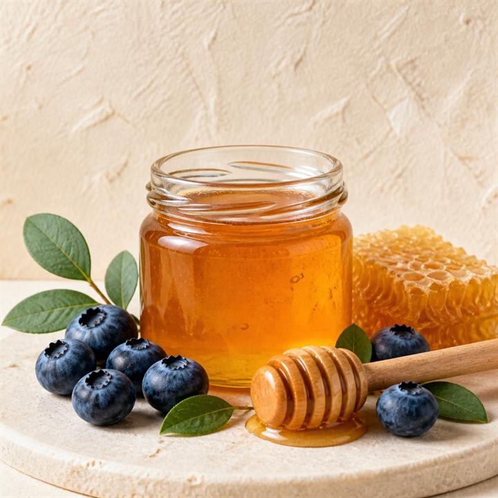
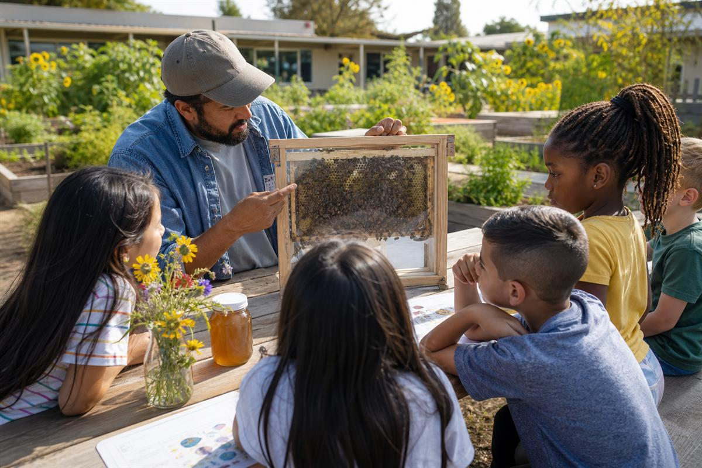

Wildflower
Deep & floral
Gathered from wildflower blooms across the Valley. Our everyday honey — tea, toast, oatmeal, and straight off the spoon.

Madera County, California
Unfiltered, straight from the comb, the way our family has jarred it since 2020. Sold under our Cali Queen Honey label.
Three honeys, one promise: nothing added, nothing filtered out. Harvests follow the bloom, so what’s in the jar changes with the season — call to see what’s on the shelf.

Deep & floral
Gathered from wildflower blooms across the Valley. Our everyday honey — tea, toast, oatmeal, and straight off the spoon.

Light & citrusy
From the orange orchards in bloom each spring. Bright and gentle — lovely in baking, dressings, and marinades.

Sweet & fruity
Made when our hives work the blueberry fields. A richer, fruit-kissed honey for toast and smoothies.
We’re a family from Madera. We started keeping bees in 2020, and it turned into all of this — apiaries across the Central Valley, a table at the local markets, and jars in more kitchens than we ever expected.
Our bees do double duty. Besides making honey, they pollinate family farms around the Valley, which means healthier crops for our neighbors and better forage for the hives. Keeping bees well is keeping the land well — we don’t see a difference between the two.
Every jar is raw and unfiltered. That’s not a marketing line; it’s just how honey should be.
“By far the best honey I’ve ever had. I use it in smoothies, overnight oats, tea and BBQ sauce. I love this honey so much, I give it out as gifts.”
— Gilberto H.

Farm to School
We were awarded a California Department of Food and Agriculture Farm to School grant to grow our production and bring local honey — and hands-on bee education — to schools in our region.
If you buy for a school, a store, or a restaurant, we’d love to talk.
Get in touch“The best honey that has helped my family with allergies and sickness, and great service!”
— Mrs. Nolan R.
“They’re amazing! A great family business. Our family loves their honey!”
— Shamika O.
Call or email us and we’ll get you set up — jars for your kitchen, or cases for your store or school.
Madera, CA 93637 · Find us at local markets around the Valley — we post dates on Instagram.